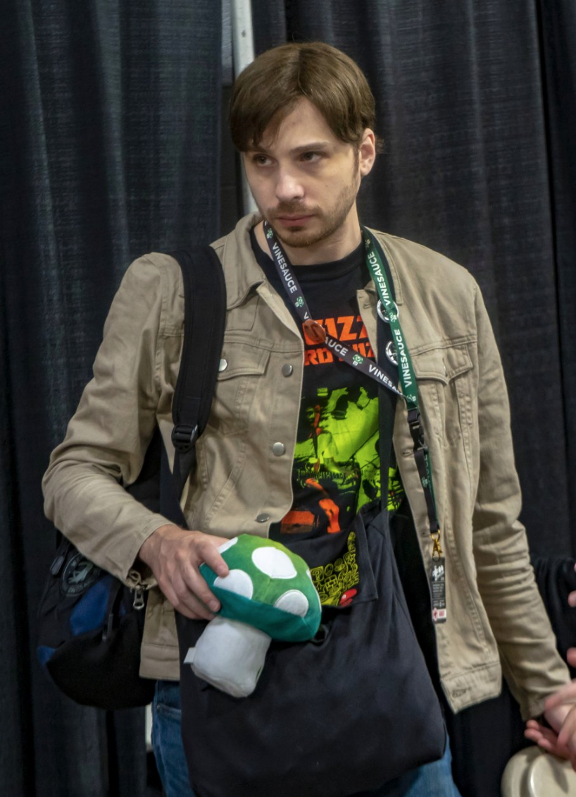

About Vinny
Vinny is a New Yorker (with Italian blood!) and the creator of Vinesauce. He enjoys helping those in need every year in his charity streams. He laughs at childish things and is just fun to watch. He's my favorite streamer of the group.
About Joel
Joel is a Swedish streamer and a part of the Vinesauce team. Like Vinny, he makes childish jokes and finds the weirdest things funny, but he is a great guy and is a great watch when you need a good laugh. He's still not one hundred percent familiar with the US and English lanuage, which can make for some even funnier moments!